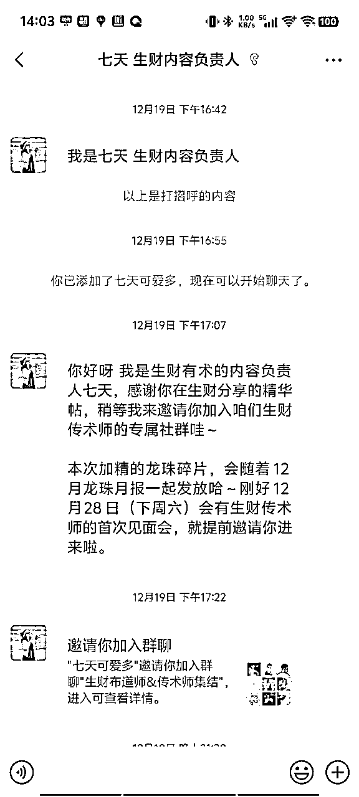
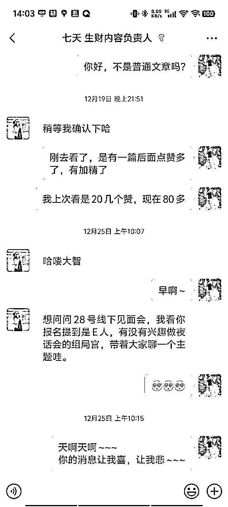
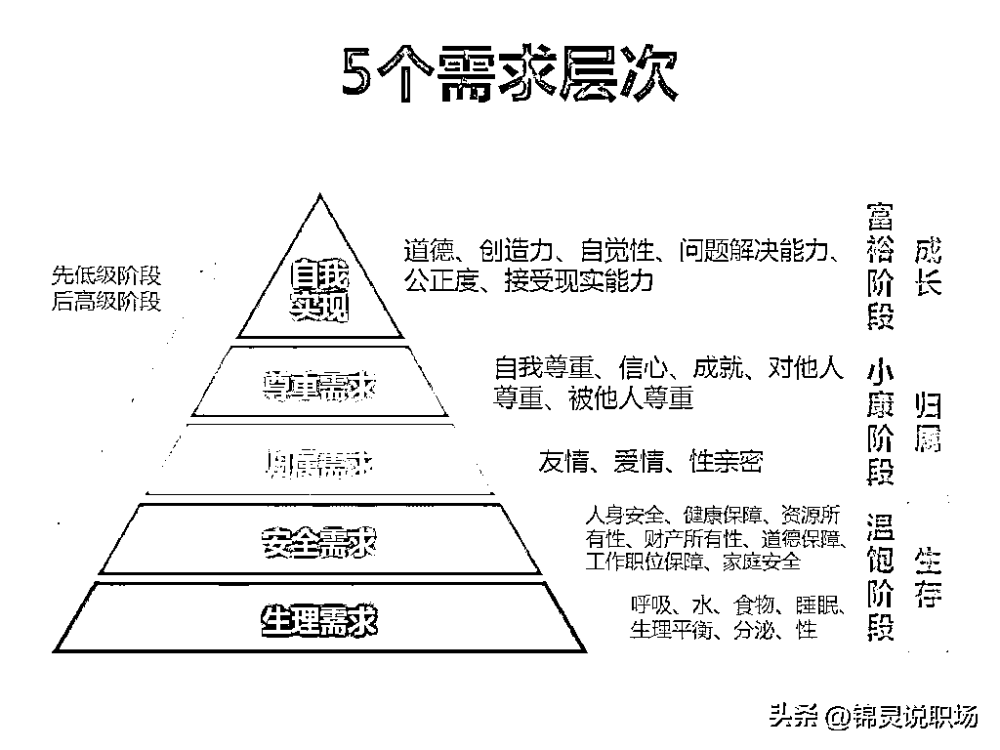

来源：https://scnsk912rm25.feishu.cn/docx/LO4vd6MQzocn8txFdRZcjmp9nYz
突然有一天收到“七天”（生财内容负责人）的微信，原来有一篇文章被评了精华，挺意外的；跟着参加传术师见面会，七天邀约，要不要做组长，主要职责就是服务组员，和策划一个《夜话》的主题。


🐧1、如何找到“生财”之道，帮助自己减少人生定位的误差，提高成功概率；
发散：新人/熟人/老人，不同阶段，在生财怎么借力甚至借势，从而帮助自己有定位人生，简单说，如何让生财帮自己鹤立鸡群/打破瓶颈/跳跃阶层。。。
🐧2、2024年最后的一个月，你洞察到“生财”哪些机会，可以给自己在2025赚到钱；
发散：天天看生财，是练就火眼金睛，还是有眼无珠，不用多，就12月的生财文章/风向标等，洞察到哪些资讯，能帮自己在2025年，有信心可以赚钱的思绪。
🐧3、2024年我在“生财”吃到最大的亏是什么，怎样做到逆风翻盘～“吃亏是福”！
发散：“吃亏”，没报航海，报错航海，按照圈友文章做掉坑，没跟大神文章错过风口等；掉坑不重要，没死就行，重要的是有没有得到经验，有没有增长本领，应该怎么锻炼自己的本领。。。
🐧4、一人一个“白日梦”，有没有想在“生财”搞个大project
发散：生财这么大，圈友这么利他，这么多机会，有没有做过白日梦；如何有，那你的梦缺什么可以成真，缺技术/缺金钱/缺资源或缺天机，能不能凑齐3个臭皮匠，说不定能见到诸葛亮～
在传术师的群里，看到大家有各种的讨论，有一些话题引起了我的注意，如
好多新人只会一味的提问大神，在没购买付费课程，已经有做解答，只是没及时回复，就会引来新人意见；
生财里面有很多圈友分享的优秀贴，新人的过度阶段其实也不容易，有圈友就分享了大神指引新人的教学文章；
自己也看到不少的评论，有些人来生财没多久，就有不错的成绩，有些来了好一段时间，也找不到自己合适定位。
结合思绪，定下了夜话主题：如何把“生财有术”变成自己的《致富宝典》
得到了七天的通过，就确定了主题，但是没想过的事就发生了~
七天发布了话题册，让大家参与，好长的一段时间，大家对我的主题不感兴趣；
自己挺疑惑，怎么大家对这个话题不感兴趣呢，我就对爆满的话题组做思考，先介绍一下，大家也会选择他们，
反映了自己在这段时间的放松，真让自己的职业触觉变松垮了。
大家是更需求得到，立马解决问题的“良药”。
如果现在忙着赚钱的圈友，应该没有时间；
学习嘉宾的经验分享，和大咖面对面的请教，找厉害圈友请教交流；目的就是，解决目前困惑或获取信息差。
对于我的经历而言，找问题的解决方法，
还有带着很多疑问，来一探究竟。
不知道，我把话题进行改变，会不会有不一样的结果；没发生，所以没法验证，但我习惯每个问题的发型，都去做“意淫”；我觉得，每一个问题，都是会重复出现，每一次问题的方案思考，都是为下一次问题解决做路演。
分配小组后，我做了每个组员的“生财背调”😁，没想到这个动作，让我获益不少，又很奇妙地，对我的主题有了更生动的带入。
当我做完了组员的生财背调，好像上天在我的灵感上，加上了肉体。
不过，没给大家带来足够价值，还被我拆解成“生财人群模型”，
兄弟姐妹们，不好意思，向你们致歉了！
做了五年淘宝童装，比较擅长付费推广，想转战小红书，目前百货以及首饰类目，外面付费学习了chatgpt，mj，sd这几个主流ai软件，想学习AI绘画的实际落地赚钱项目
cursor航海，21天全勤，最终做到开发出自己的第一款小棋牌游戏。
9月才进生财，已经发布了9篇帖子，其中一篇是用自己的血和泪写给我们的避坑指南。
从电话营销到亏钱之旅：一位淘宝童装店主的代运营经历
5年私域会员运营经验，过往在大厂工作多年，现在在一家电商公司负责私域业务线；
可提供电商私域会员精细化运营模式，快团团运营从0到1的经验教训，小绿书做到百万阅读量的方法经验。
小绿书带货航海的教练。
小绿书如何写出多篇10w+、不到一个月赚到1万多？
一位95后持续创业者，创业三年累计变现500W，国内传统电商（淘宝、天猫、拼多多、京东）自运营代运营，21年入局亚马逊北美站，目前店铺30+，青少年科技创新大赛月引流教育家长粉3000+，马来西亚燕窝批发零售
抖音小店航海，新手如何在30天内做到10万GMV
3年小游戏短视频创作经验，开始转型到带货，个人完成稳定月入十万小目标。
可提供的资源，抖音快手小游戏实操经验、线下自助棋牌室、抖音棋牌直播等。
多篇精华帖，实战派王者，可以到主页查看。
快手带货自然流玩法，鏖战三个月，我总结出三大必做的理由和踩过的16个大坑
相信大家已经非常熟悉，运营一档播客节目：搞钱学姐 正在采访100个搞钱女生。
用好生财， 打造自己的赚钱系统
当看到雪姨这篇文章时，有点惊讶，竟然是相同的主题。非常好的文章，新人一定要去读一下。
读完的感觉很受用，更确定了自己主题价值，很多人其实是不会利用好生财，都在“蜜糖的海洋里浮沉着”。
我非常同意文章里纪钟老师的观点，“生财本质上是一个给到大家的一个工具”，但是很多人（包括刚开始的自己）却只享受着生财给我们的“奶头乐”。
当一个创业者，或一个想赚钱的人，看到这么多可以赚钱的信息，那种快感，就像一个“瘾君子”让他看到梦寐以求的“东西”。
还有久久不得志的人群，只要来到生财，就感觉一切都美好了，立马找回自己的信心。
不过这些“假象”，对于还没形成稳定“财商”的人来说，非常容易变成“奶头乐”陷阱。原因就是，无论是文章还是航海，只是给了我们一次体验，有过失败经验的创业者，都会有一个体验，“信息时效性”都不是永久，我们通过项目的实践，是增加我们对市场、平台、社会等运行的规律了解，还有自己掌握技术的锻炼，沉淀一个自己适合自己的运营模式，当某一刻，天时地利人和都满足的时候，就让你一步起飞；
所以，经常会听到大佬说，不要着急，先把自己管理好，把能力沉淀好，赚钱其实就是一瞬间的事。
但是更多人，在意的是“术”，或片面的“技巧”，缺乏对经营之道，或综合财商的追求，导致一直在迷茫和喜悦中，不断“轮回”。其中的原因，不懂为自己“0-1”的成果，保驾护航和决策未来。
大家看图就应该懂，我就不做过多文字解说了。
为了统一思想，先设定
1、自我实现（意义需求）
2、尊重需求
3、归属需求
4、安全需求
5、生理需求

原来的理解就是吃饭、睡觉，人的基本需求；但是来到创业者和追求金钱的人来说，看谁赚钱、什么项目赚钱，怎么赚钱，就像米饭和水一样重要。
刚加入的一小部分的生财小白。
只有简单倒卖信息差的盈利模式，如倒卖最新的生财资料，搬运A平台资料到B平台，只会一模一样的简单复制。
文章看着兴奋，实践就没时间，只在满足自嗨的精神需求，相当于有饭吃就行，为自己多研究点菜品、美食，就嫌麻烦、难度大、费时间、要洗碗等。
不要看生财帖，无论精华还是风向标（一看就掉“奶头乐陷阱”）。
遇到举办航海活动就参加报名，挑介绍里看得懂的，在21天全力按流程学习，缠着志愿者或教练，还可以多在小组群里发问，“装孙子”也不怕🤭；要查资料的时候，先在生财查，只要有接近的经验帖，这些就是你研究的资料，可以看、认真看、死命看；教练点评案例，看完点评和日志案例，不明白就马上去提问；还有一个宝藏，就是排行榜的领先者，越往后的时间，排前面的人越要把他的日记翻开看，我肯定这里有大宝藏。
没举办航海时，就自己刷航海，先刷自己看得懂的，不要只看《航海手册》，要看《高手领航》和《好事墙》；其实没开班的航海做得也非常好，完全可以自学 ；同样的，不懂地方，就先在生财搜资料，只要是生财的航海，我敢打99.99%的担保，基本有大神和高手把你遇到的难点，已经写出来了，这些生财帖，就是你的蛋白质，能让你“生财肌肉”快速膨胀。
如果对AI不了解的同学，我建议先从《ChatGPT提效》这个开始，先学会用用这些AI，国内国外都可以，我自己就用国外；时间够，就看看《个人优势挖掘》，时间少，就看直接能赚钱的航海项目。
当你做航海时，就会有无数的问题产生，通常看生财帖，就非常容易掉入“奶头乐陷阱”；记得，生财帖不要看，看，只是为了解决问题，解决了就走，不要留恋这个“奶头乐”“温柔乡”！！！
除了生财帖，外面的世界一样精彩，记住，你看的目的，一定是为了解决问题，听不明白，就换下一个；听明白了，就回去继续做航海。
有自己工作，想兼职做生财项目，多一份的收益；
有自己的项目，不过觉得没出头，太平淡没意思，感觉已经变夕阳，要找更有价值、更大风口的项目；
已经有基本的技术，掌握一些技巧，也懂把生财当成自己的工具箱，或是望远镜；
不再满足“温饱”，需要更多“色、香、味俱全”的需求。
参加生财的航海，可以顺利毕业，还能超出手册上的要求，甚至做出意想不到的结果。
能自选航海，也能对一些优秀的生财帖，摸着石头过河，能操作一些小项目。
有不错的收入，但还在低价值变现阶段。
把相关的生财帖以消化为目标去读，把除了相关的航海，腾出时间看看其他航海，是否有打破自己瓶颈的关键点，或是模式，或是可以借鉴、融合。
增加信息差的范围，在阅读生财资料，更多去关注成果案例分享里，和自己的差别，探寻自己项目前、后、左、右的相关，提高自己“财商”。
多尝试高价值变现的测试和思考。
因为有能力，就容易有了偏见，也容易喜欢待在舒适区；
好生意没这么多，尽量不要“赤手空拳”去新领域起盘；
借调优势，或平移能力，这样能减少试错成本，和提高抓住机会的概率。
来生财找同路人，或者已经有了自己的生意搭子；
有自己固定的项目，如基本盘、流程、货源等；
能力不再是只有一双手，已经有比1大的能力；
需求加强或扩大自己的业务范畴，和领地疆域。
航海教练、有自己擅长板块；
可以解决新人问题，也能带出“技能者”；
通常已经是技能型人才，可以带领团队，不过对比下来，商业策划会相对短板。
只有发光的金子，才会被看到价值，展示自我能力，才有能力吸引你需要的资源；
可能有很多碎渣，但随着吸引力的增长，大体量资源会慢慢靠近；
生财有着6万人的高知人群，最简单的方式，不是看帖，而是发精华帖，让更多同行和优秀的人感到共鸣；
每一个团队，都有自己的本领，正所谓，三人行必有我师，更何况，未必大家起盘路线是一样的，某个不起眼的小点，或其他的价值交换，能帮到企业起到一个决定性的作用。
忙碌的工作中，容易缺乏思考，保留一些个人时间，轻松的状态更容易做正确的决定；
不要等问题出现再找人解决，最好提前为自己筹备圈子，这样比平时多赚一些钱，更有价值。
生财KOL，航海家，有自己成熟的经验、技能；
增长需求已经不再满足线性增长，要不就是指数增长，要不就要位数增长。
企业负责人，对发展有决定权的角色，被拦住的已经不是技术问题，更多是发展方向的问题。
风向标（所有，包括非精品）教赚钱的帖子，已经不是你的主要目标，没被发现的“普通风向标”或信息，更应该是你花时间收集的关注点。
把生财合适你发展的，精华帖博主挖出来，不管是人才储备，还是价值储备，才是体量指数增长的可能性。
如何找没被发现的大趋势，雪姨的搞钱女孩博客，采访黄小刀那一集，亲自讲解了怎么从普通小白人，短时间内变成了“里程碑人物”的过程。
做好微创新，把生财合适的精华帖，运用自己能力，结合企业发展，揉搓成团，那将会有不可思议的“快人一步”的成果。
很多时候，创业赚到钱，只需要“半步”的差距。
精力花在技术上，只能得到线性增长，只有“决策”的价值，才有机会，满足这种发展的可能。
曾经有个小口，因为某些原因，就没进入到这个层级，以下只是我的观察分析，不是经验分享。
这个需求已经不再为自我出发，更多是为某个群体，甚至人类发展等。
体量和势能，是最明确的评判指标。
亦人（要解决大家赚钱途径）、雪姨（要带1000个女孩赚钱）
吸引生财，让生财的决策层，或者用户层，被你价值吸引；
嫁入生财，用上更庞大的用户体量，更稳定的变现产品，更确定的运营流程；
借势生财，随着生财发展，而借用被市场检验后的模式，想法和创新。
携手生财，合作办学，携手在某赛道发力；
挖掘生财人群有共鸣的需求，这类群体，已经接受付费意愿，也可以作为市场这类群体的代表，同时忽略个体需求，先挖掘强需求，不要分散精力。
不要强求天时地利人和，没有盈利，模式就会不健康，有合适的盈利模式，才是雪球效应，要不就变雪崩悲剧。
要测试出盈利模式，才能确定自己想法是假大空，还是在建立“乌托邦”。
这是大家经常听到话，找自己感兴趣的项目开始做，容易坚持下去。
在这个问题上，我有一些自己的感悟，分享另一个角度给大家，可以做一下思想对撞。
对于刚没形成稳定“财商”的创业新手们，没有“技术”支撑，在第五层需求里，我也建议过，可以先从ChatGPT开始，现在这个社会中，这软件使用，能大大提高你工作效率。举一个不恰当的例子：
以前不懂文字叫文盲，
后面不会电脑算文盲，
现在不会用智能手机的，连生活都容易出问题，
未来，不会用AI智能体协助工作，应该会淘汰，学了几年的基础程序员都要给AI淘汰，更何况不会AI普通人。
有ChatGPT护体，可以先挑新的航海参加，这些航海课程的需求，和写手册的大神，他们把最新的应用、方法都会调教好；我还看到，正在学习的手册，因为有个操作方式更新了，教练也会同步修改。
所以，先做新的，项目时效性更贴近市场，操作流程也更符合当下状况。
如果你有自己学历，能力，找到工作；紧跟就是各种压力，可能很多人感叹，班难上、屎难吃；
但是一些连工作都找不到，要所谓的创业，可能他们连“屎”都没得吃。
如果我们上班也好，兼职也好，创业也好，能达到比新人要强的能力，那我们换来的，可能就是被肥料养大的庄稼、蔬菜、水果等；
能力再上一层楼，管理者、有稳定项目的创业者，那我们换来的是，被这些庄稼、蔬菜养殖的鸡鸭鹅，猪牛羊，可以吃上肉了；
那高管、企业主，有更多资源的人，是不是可以拥有，吃这些草食动物的肉食动物了，狮子、老虎，不管好不好吃，那就是珍贵的资源和物料，一般人高攀不起的东西了。
还有更高的吗？
当然有了，第一层不就是吗，他们已经不是说“屎”难吃的人了，他们更多会思考，怎么把“屎”，用什么方法，平衡好自己创立的世界，让生态有一个美好的环境了。